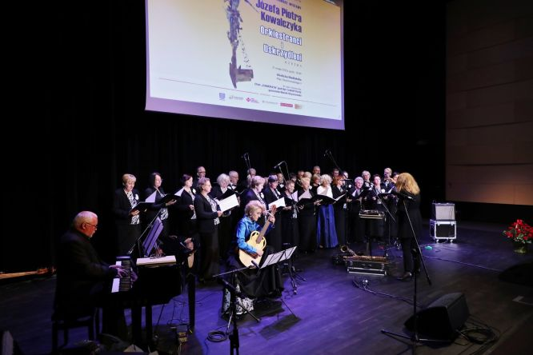
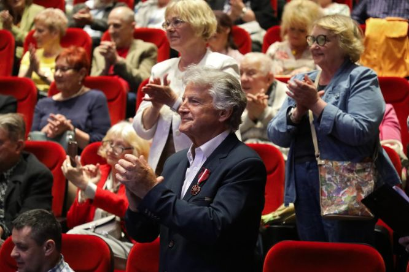
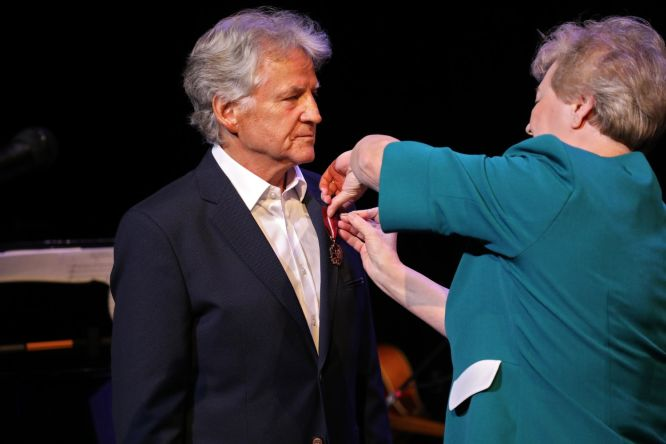
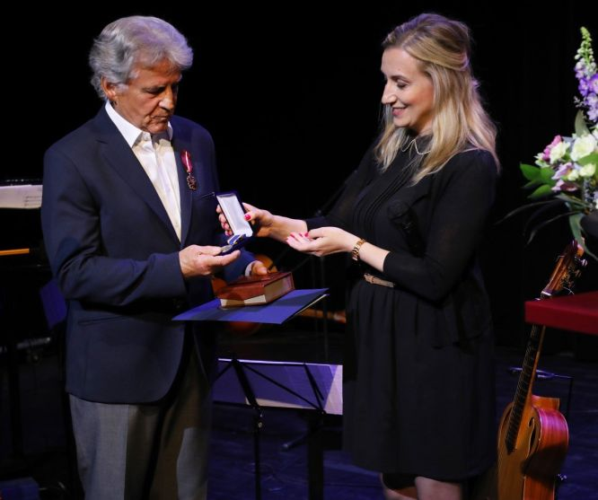
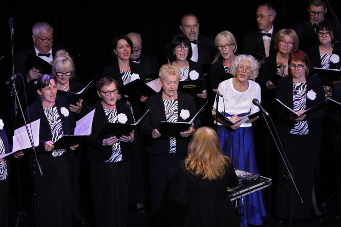
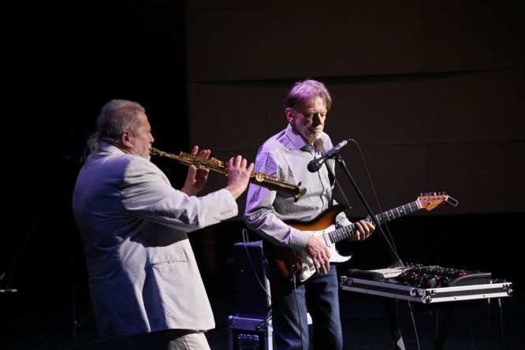
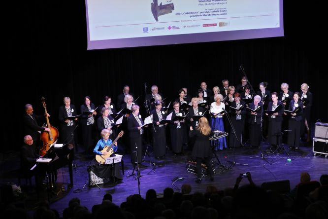

A tymczasem w Cameracie...
.
2022-05-21
W wielickiej Mediatece miało miejsce uroczyste otwarcie jubileuszowej wystawy rzeźb Józefa Piotra Kowalczyka pt. „Orkiestranci i uskrzydleni".
Jest to artystyczna interpretacja powiedzenia, iż „muzyka uskrzydla”.
Orkiestranci to w sposób abstrakcyjny przedstawieni członkowie orkiestry, zaś uskrzydleni to publiczność, która dała się porwać muzyce.

Marzenie artysty, by jego drewniana orkiestra pod batutą drewnianego dyrygenta nareszcie zagrała wspólnie w jednym miejscu, spełniło się.
Podczas wernisażu Józef Piotr Kowalczyk został udekorowany brązowym medalem „Zasłużony Kulturze Gloria Artis”, przyznanym mu przez prof. dr hab. Piotra Glińskiego – wicepremiera i ministra kultury i dziedzictwa narodowego. Dekoracji dokonała Joanna Florkiewicz-Kamieniarczyk – dyrektor Wydziału Rewaloryzacji Zabytków Krakowa i Dziedzictwa Narodowego Małopolskiego Urzędu Wojewódzkiego w Krakowie.

Ponadto Józef Piotr Kowalczyk został uhonorowany przez Artura Kozioła - Burmistrza Miasta i Gmina Wieliczka Odznaką Honorową Królewskiego Górniczego Wolnego Miasta Wieliczka, którą wręczyła mu jego zastępczyni – Agnieszka Szczepaniak.

W części artystycznej wystąpił chór „Camerata” pod dyrekcją Izabeli Szoty

oraz Marek Stryszowski i Paweł Ścierański – znani jazzmani z zespołu „Laboratorium”.

Cameracie towarzyszyli Jacek Bylica (fortepian), Małgorzata Żegleń-Włodarczyk (gitara) oraz Andrzej Kłyszewski (akordeon) i Marek Turchan (kontrabas).

Wystawę „Orkiestranci i uskrzydleni” można oglądać w Wielickiej Mediatece do 24 czerwca br.
Tekst Izabela Szota

© Stowarzyszenie Muzyczne Chór Camerata Wieliczka
Prowadzenie strony oraz zdjęcia: Małgorzata Wysocka